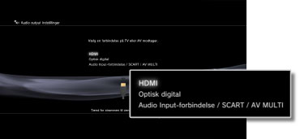
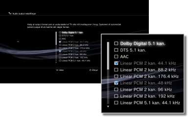
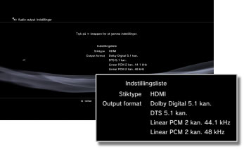

Indstillinger > Lydindstillinger > Audio Output indstillinger
Audio output indstillinger
Juster systemets lydudgangsindstillinger. Disse indstillinger bruges primært, når systemet tilsluttes lydenheder, der understøtter digitalt lydoutput, herunder f.eks. AV-forstærkere (receivere) til hjemmeunderholdningssystemer.
1. |
Kontroller de formater, din lydenhed understøtter. |
||||||||||||
|---|---|---|---|---|---|---|---|---|---|---|---|---|---|
2. |
Vælg |
||||||||||||
3. |
Vælg [Audio output indstillinger]. |
||||||||||||
4. |
Vælg indgangsstikket på lydenheden. Understøttede kanalantal og lydformater varierer iht. den benyttede stiktype. 
|
||||||||||||
5. |
Vælg lydudgangsformater.  |
||||||||||||
6. |
Kontroller dine indstillinger.  |
||||||||||||
7. |
Gem dine indstillinger. |
 -tasten for at gå tilbage til den foregående skærm og gennemse indstillingerne.
-tasten for at gå tilbage til den foregående skærm og gennemse indstillingerne.Tips
- [Linear PCM 2 kan.] er som standard indstillet til at blive sendt som output fra alle outputstik. Hvis du ænder lydoutputindstillingerne, udsendes kun lyd fra de forbindelser, der blev konfigureret.
- Hvis du ændrer lydoutputindstillingerne, kan dit system ikke længere sende lyd samtidigt fra flere outputstik. Hvis systemet f.eks. er sluttet til et tv via et HDMI-kabel og sluttet til en lydenhed via et digitalt optisk kabel, høres der ingen lyd fra tv'et, hvis du skifter til [Optisk digital] under [Audio output indstillinger]. Hvis du vil høre lyd fra fjernsynet, skal du ændre indstillingen til [HDMI] eller vælge
 (Indstillinger) >
(Indstillinger) >  (Lydindstillinger) > [Audio Multi-output] og indstille funktionen til [Aktivér].
(Lydindstillinger) > [Audio Multi-output] og indstille funktionen til [Aktivér]. - Hvis du vælger [Linear PCM 2 kan. 88,2 kHz] eller[Linear PCM 2 kan. 176,4 kHz] i trin 5, kan lyden være afbrudt, eller der høres muligvis ikke lyd fra nogle lydenheder.
- Når du bruger et HDMI-kabel, sendes der kun [Linear PCM 2 kan.]-lyd fra PlayStation®2 og PlayStation® formateret software. Hvis der skal sendes lyd i Dolby Digital eller DTS®, skal du tilslutte PS3™-systemet og lydenheden med et digitalt optisk kabel og ændre indstillingen under [Audio output indstillinger] til [Optisk digital].
- Hvis en enhed, der ikke er kompatibel med HDCP (High-bandwidth Digital Content Protection)-standarden, sluttes til systemet ved hjælp af et HDMI-kabel, kan der ikke udsendes video og/eller lyd fra systemet.
- Hvis Dolby TrueHD er valgt til lydformat, gengives lyden i Dolby Digital, mens Blu-ray 3D™-indholdet afspilles.
Vigtigt
- Nogle titler i din PlayStation®2- eller PlayStation® formateret software afspilles anderledes på et PS3-system end på et PlayStation®2- eller PlayStation®-system, eller måske afspilles de ikke korrekt på PS3™-systemet.
- Ikke alle PS3™-systemer understøtter afspilning af PlayStation®2-formaterede diske. Yderligere oplysninger findes under [Understøttede disktyper], på SIE-webstedet for dit land/område eller i den dokumentation, der fulgte med dit PS3™-system.